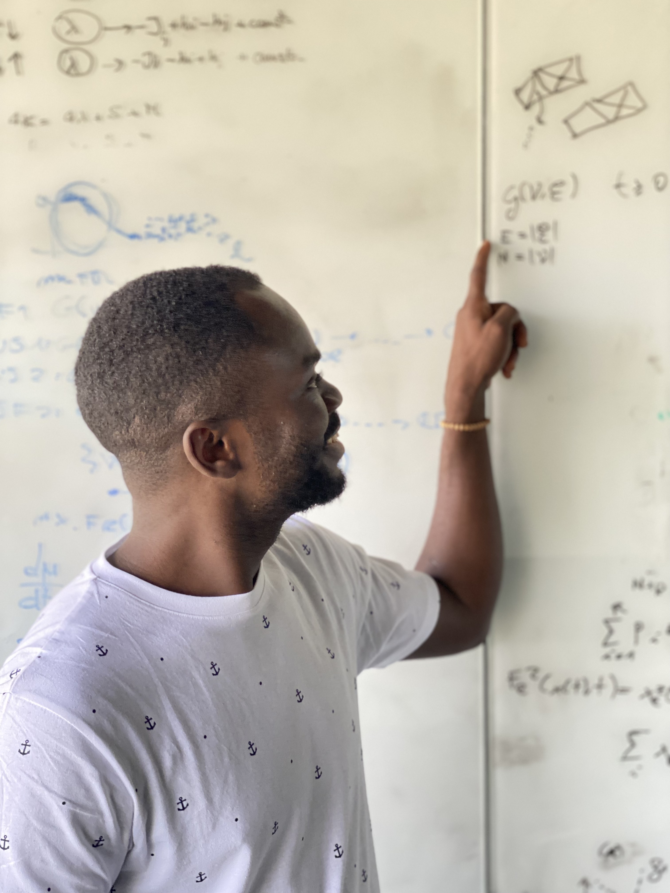

About
Me

 I am passionate about
developing cutting-edge methods to address real problems. My Ph.D. research focuses on developing
theoretical and principled methods to solve traffic congestion. These methods have been extensively
applied to real transportation networks, such as the bus and tram networks of the city of Bordeaux
in France and the bus network of Grenoble, also in France. One intriguing fact about these methods
is that they do not rely on the shortest path approach for passenger routing; instead, we focus on
finding the ``convenient'' route for passengers.
I am passionate about
developing cutting-edge methods to address real problems. My Ph.D. research focuses on developing
theoretical and principled methods to solve traffic congestion. These methods have been extensively
applied to real transportation networks, such as the bus and tram networks of the city of Bordeaux
in France and the bus network of Grenoble, also in France. One intriguing fact about these methods
is that they do not rely on the shortest path approach for passenger routing; instead, we focus on
finding the ``convenient'' route for passengers.